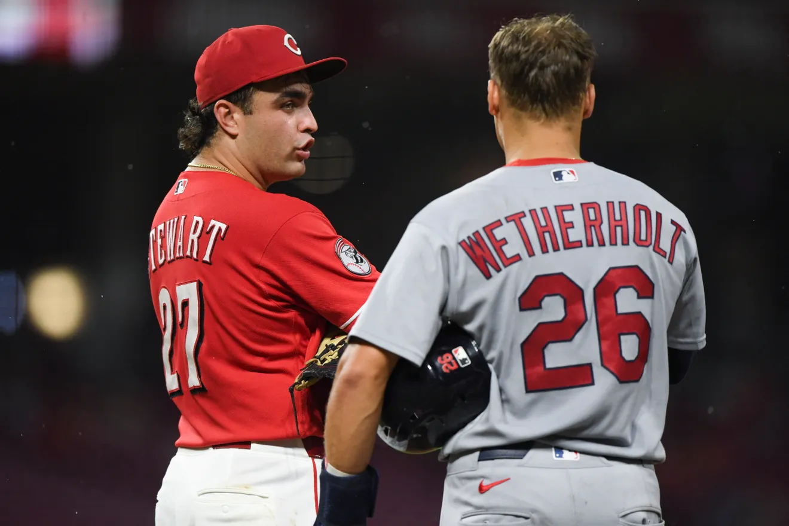

Sal Stewart has shown great performance this season for the Cincinnati Reds. As of September 10th, he had 31 home runs and 107 RBIs, which leads the MLB.
Sal has a .267 batting average and a .337 on-base percentage.
JJ Wetherholt has had a good season for the St. Louis Cardinals. As of September 10th, he has a 4.7 WAR and a .343 on-base percentage.
JJ has a .242 batting average, with 17 home runs and 48 RBIs.
Both Sal and JJ have had impressive rookie seasons, but when you look at the numbers, you will see who had the better overall season. Sal has been the better player this season. JJ's higher WAR is from his defensive play, which does not translate to Sal's because it is almost impossible to have a high defensive WAR playing first base. JJ is not a power hitter like Sal, which shows in the home run numbers, and he also bats leadoff, which causes his low RBI numbers. But I feel like if a rookie is leading the league in a major stat like RBIs, the case should be closed. Sal Stewart should win the 2026 NL Rookie of the Year award.
